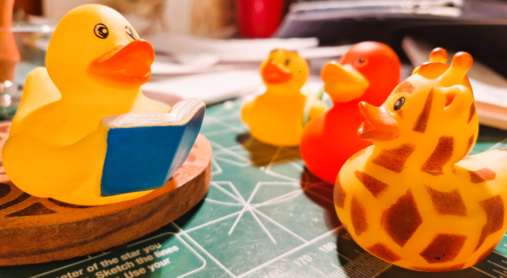

The Vision

The Mission Statement
To entertain and educate the general public of statistical and analytical concepts through data associated with the hit UK TV show “Taskmaster”.
The Objective
Using data from the UK hit TV show “Taskmaster”, The Median Duck aims to entertain and educate the general public of statistical and analytical concepts. Articles and analysis will be written for a non-technical audience predominantly.
Types of analysis and content fall under the following umbrellas with some examples.
The various datasets, code snippets and analysis will be open source on this git repo, such that others are able to reproduce it at their own pace, and contribute to the project.
Exploratory Analysis
Based on existing series and historical data, what insights can we gleam.
Examples: - Do older contestants fair better on the show? Is there a correlation between series ranking and age of contestant? - Has Greg been harsher as the show has progressed along? - Was Sally Phillips better at creative tasks, than objective tasks on average? - Existing analysis that you have performed thus far would fall into this category.
Predictive Analysis
Based on existing series and historical data, can we make a prediction on an outcome. The outcome will be realised eventually, and we can compare our prediction to the observed outcome to see how (in)accurate we were.
Examples: - Prior to a series starting, can we predict who is likely to win the series? What are the probabilities (odds) of each contestant winning? - As the series progresses and we start to see actual contestant performance, how do these odds change?
Hypothetical Analysis
Based on existing data, can we make a hypothesise as to what an outcome may be. The outcome will not be realised (or at least very low probability), and we thus can’t compare our hypothesised prediction to reality.
Examples: - Would Katherine Ryan still have won her series if it was a 10 episode series, rather than 5 episodes? - What would be the outcome of a hypothetical series featuring Ed Gamble, Victoria Coren Mitchell, Nish Kumar, Josh Widdicombe and Sally Phillips?
Game Theory and Strategy
Based on existing literature, what is a optimal way to succeed in a task.
Examples: - What is the optimal strategy in Series 13’s “Guess Shoe” task? - What is the optimal strategy in Series 4’s “Draw the median duck” task? - What is the optimal strategy in Series 13’s “Give Alex a high-five. The third-fastest high-fiver wins.” task?
Final Thoughts
This vision is ambitious and I’m not entirely sure if I can pull it all (or any) of it off. However, in the spirit of Taskmaster, I am willing to give it a try, and potentially make a fool out of myself as I succeed or fail.
I’m hoping that documenting this vision will also inspire others to contribute and collaborate on the project in the future.